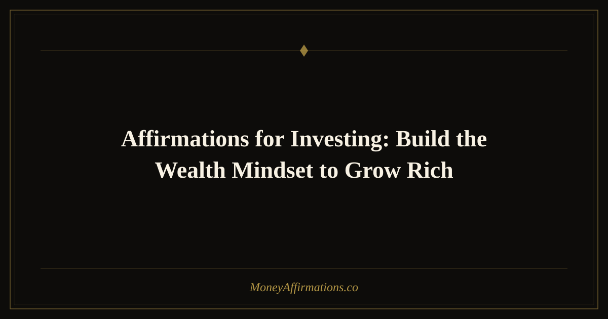

Affirmations for Investing: Build the Wealth Mindset to Grow Rich

The biggest barrier to successful investing is rarely a lack of information. Most people know they should invest early, diversify broadly, and hold through volatility. The real barrier is emotional — the anxiety spike when markets drop, the paralysis when choosing where to start, the creeping feeling that investing is something "other people" understand but you never will. Affirmations for investing work directly on this emotional layer. They do not replace financial literacy, but they dissolve the psychological friction that prevents you from acting on what you already know. When you can sit with a 15 percent market correction without panic-selling, when you can automate a contribution and feel peaceful rather than uncertain, and when you can stay invested through years of compounding — that is a mindset outcome, and mindset is exactly what these affirmations are built to shape.
What are investing affirmations?
Investing affirmations are present-tense statements that target the fear-based beliefs most common among new and intermediate investors: the fear that the market will crash the moment you enter, the belief that investing is only for the wealthy, and the anxious compulsion to check prices daily and react to noise. Good investing affirmations also build the patience that compound growth demands — the ability to think in decades rather than days. By repeating these statements consistently, you train your brain to associate investing with confidence, discipline, and long-term opportunity rather than with risk, loss, and confusion. This is the mindset that the most successful investors, from index fund holders to real estate investors, operate from by default.
20 affirmations for investing
- I invest consistently because time in the market builds the wealth I want.
- Market volatility is a normal part of investing, and I hold steady through it.
- Compound growth rewards my patience — every year I stay invested is a year working for me.
- I understand my investments well enough to make confident, informed decisions.
- I diversify my portfolio because spreading risk is a sign of financial wisdom, not fear.
- I invest in index funds, real estate, and other assets that grow my net worth over time.
- I do not need to time the market perfectly — I simply need to stay in the market.
- I am comfortable with short-term fluctuations because my focus is on long-term outcomes.
- Every dollar I invest today is doing work on my behalf, even while I sleep.
- I automate my investments so that consistency happens regardless of my mood or the news cycle.
- I see market downturns as buying opportunities, not reasons to panic or retreat.
- I invest in real estate with confidence because I understand how to evaluate value.
- My investment knowledge grows every month, and I make better decisions because of it.
- I have a long-term investment strategy and I trust it through all market conditions.
- I maximize my retirement contributions because future-me deserves financial security.
- I am not intimidated by financial markets — I am a participant in them.
- The discipline I bring to investing today creates the financial freedom I will enjoy tomorrow.
- I choose investments aligned with my values and my long-term wealth goals.
- I do not let fear of loss keep me from the far greater cost of not investing at all.
- Wealth through investing is available to me, and I build it steadily and intentionally every year.
How to use these affirmations
Investing affirmations are most powerful when used at the moments where emotion and money intersect most sharply. Read them on the morning of any day you plan to make a contribution or rebalance your portfolio — this primes a calm, strategic mindset before you open your brokerage app. If you track your portfolio and notice a tendency toward anxiety when prices fall, create a personal rule: before checking your portfolio during a down market, read affirmations 7, 8, and 11 aloud. This simple ritual interrupts the reactive brain and reactivates the rational one. For those just getting started, write your three most resonant affirmations on a sticky note and place it inside your wallet or on your laptop. The goal is repeated exposure to the belief system of a long-term investor until it becomes your default orientation — not something you have to remind yourself of, but something you simply are.
Tips to make them work faster
- Pair your affirmation practice with your contribution schedule. Every time you transfer money to your investment account, read one affirmation aloud first. This creates a Pavlovian link between investing and a feeling of calm intentionality.
- Track your net worth, not your portfolio's daily value. Checking net worth quarterly rather than market price daily naturally reinforces the long-term thinking that affirmations support.
- Learn one new investing concept per month. Affirmations that say "I understand my investments" gain credibility faster when you are actively closing knowledge gaps. Education and affirmation work synergistically.
- Celebrate milestones out loud. When your portfolio hits a new threshold — first $1,000, first $10,000, first six figures — acknowledge it with an affirmation. Tying positive emotion to progress reinforces the behavior.
- Create a personal investing thesis. Write two to three sentences about why you invest and what it is building toward. Reading this before your affirmations anchors the practice in purpose, not just habit.
Frequently Asked Questions
Can affirmations help me stop panic-selling during market crashes?
Yes — this is one of the most concrete applications. Panic-selling is an emotional response that overrides rational strategy. Affirmations practiced consistently before a crash reduce the emotional intensity of market drops because they have already trained your brain to interpret volatility as normal. The key is building the habit before you need it, not during the event.
I have very little money to invest. Are these still relevant?
Absolutely. Investing $25 a month is less about the amount and more about the identity — you are someone who invests. Many affirmations on this list are specifically designed for people building their practice from a small base. The mindset you build now is the same one that manages larger sums later. Start small, hold the identity, scale with your income.
Should I use these affirmations for crypto or speculative investments too?
These affirmations are oriented around patient, diversified, long-term wealth building — the approach most aligned with lasting financial growth. If you engage with higher-volatility assets, emphasize the affirmations around understanding your investments, setting strategy, and not letting emotion drive decisions. The patience-focused affirmations apply even more critically to speculative positions.
Building an investor's mindset is part of the broader journey of creating lasting wealth. Explore the full wealth affirmations collection for statements that support every dimension of your long-term financial life — from income growth to financial legacy.